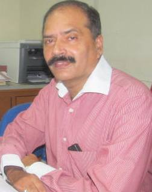

Dr. S. H. Hasan

About Me
Will be updated soon...
Recent Publications
- D. K. Verma , S. H. Hasan, D. Ranjan, R. M. Banik Modified biomass of Phanerochaete chrysosporium immobilized on luffa sponge for biosorption of hexavalent chromium Int. J. Environ. Sci. Technol. DOI 10.1007/s13762-013-0345-6
- Srivastava, P., S. H. Hasan, Biomass of Mucor heimalis for the biosorption of cadmium from aqueous solutions: Equilibrium and kinetic studies, BioResources Volume 6, Issue 4, (2011), Pages 3656-3675
- S. H. Hasan, D. Ranjan, D Mishra .Bioadsorption of arsenic: an Artificial Neural Networks and response surface methodological approach Industrial & Engineering Chemistry Research (2011) Volume 50, Issue 17, 7 September (2011), Pages 9852-9863
- Cellulosic substrates for removal of pollutants from aqueous systems: A review. Metals.Martin A. Hubbe, S. H. Hasan, Joel J. Ducoste, Bioresources (2011). 6(2) 2161-2287
- S. H. Hasan, Preeti Srivastava, Biosorptive Abatement of Cd2+ by Water Using Immobilized Biomass of Arthrobacter sp.: Response Surface Methodological Approach, Industrial & Engineering Chemistry Research (2011) 50 (1), 247-258.
- D. Ranjan, S. H. Hasan, Parametric Optimization Of Selenite And Selenate Biosorption Using Wheat Bran In Batch And Continuous Mode, Journal of Chemical & Engineering Data, (2010),55 (11) , pp. 4808-4816
- S. H. Hasan, D. Ranjan, Agro-Industrial Waste: A Low Cost Option For The Biosorptive Remediation Of Selenium Anions Industrial and Engineering Chemistry Research (2010) 49, 8927-8934
- S. H. Hasan, D. Ranjan, M. Talat, Agro-Industrial Waste 'Wheat Bran' For The Biosorptive Remediation Of Selenium Through Continuous Up-Flow Fixed-Bed Column, Journal of Hazardous Materials (2010) 181 (1-3) , pp. 1134-1142
- Deeksha Ranjan, Syed Hadi Hasan, Rice Bran Carbon: An Alternative To Commercial Activated Carbon For The Removal Of Hexavalent Chromium From Aqueous Solution, BioResources (2010) 5, 1661-1674.
- S. H. Hasan, Deeksha Ranjan, Mahe Talat, Water Hyacinth Biomass (WHB) for the biosorption of hexavalent chromium: optimization of process parameters BioResources (2010) 5, 563-575.
- D. Ranjan, M. Talat, S. H. Hasan, Rice polish: An Alternative to Conventional Adsorbents for Treating Arsenic Bearing Water by Up-Flow Column Method Industrial and Engineering Chemistry Research (2009) 48, 10180-10185.
- M. Talat, O. Prakash, S. H. Hasan, Enzymatic detection of of As(III) in aqueous solution using alginate immobilized pumpkin urease: Optimization of process variables by response surface methodology, Bioresource Technology (2009) 100, 4462-4467.
- S. H. Hasan, P. Srivastava, M. Talat, Biosorpion of Pb(II) from water using biomass of Aeromonas hydrophila: Central Composite Design for optimization of process variables Journal of Hazardous Materials (2009) 168, 1155-1162.
- K. K. Singh, S. H. Hasan, M. Talat, V. K. Singh, S. K. Gangwar, Removal of Cr(VI) from aqueous solution using wheat bran, Chemical Engineering Journal (2009) 151, 113-121.
- S. H. Hasan, P. Srivastava, Batch and continuous biosorption of Cu2+ by immobilized biomass of Arthrobacter sp., Journal of Environmental Management (2009) 90, 3313-3321.
- D. Ranjan, M. Talat, S. H. Hasan, Biosorption of Arsenic from Aqueous Solution Using Agricultural Residue 'Rice Polish', Journal of Hazardous Materials (2009) 166, 1050-1059.
- S. H. Hasan, P. Srivastava, D. Ranjan, M. Talat, Biosorption of Cr(VI) from Aqueous Solution Using A. hydrophila in Up-flow Column: Optimization of Process Variables, Applied Microbiology and Biotechnology (2009) 83, 567-577.
- S. H. Hasan, D. Ranjan, M. Talat, 'Rice polish' for the Removal of Arsenic from Aqueous Solution: Optimization of Process Variables, Industrial and Engineering Chemistry Research (2009) 48, 4194-4201.
- Om Prakash, M.Talat, S. H. Hasan, Response surface design for the optimization of enzymatic detection of mercury ions in aqueous solution using immobilized urease from vegetable waste, Journal of Molecular Catalysis B: Enzymatic (2009) 56, 265-271.
- D. Ranjan, P. Srivastava, M. Talat, S. H. Hasan., Biosorption of Cr(VI) from Water Using Biomass of Aeromonas hydrophila: Central Composite Design for Optimization of Process Variables Applied Biochemistry and Biotechnology (2009) 158, 524-539.
- Prakash, O., Talat, M., S. H. Hasan,, Pandey, R.K., Factorial design for the optimization of enzymatic detection of cadmium in aqueous solution using immobilized urease from vegetable waste , (2008), Bioresource Technology 99 (16), pp. 7565-7572
- Prakash, O., Talat, M., S. H. Hasan,, Pandey, R.K., Enzymatic detection of mercuric ions in ground-water from vegetable wastes by immobilizing pumpkin (Cucumis melo) urease in calcium alginate beads , (2008) Bioresource Technology 99 (10) , pp. 4524-4528
- S. H. Hasan,, Singh, K.K., Prakash, O., Talat, M., Ho, Y.S., Removal of Cr(VI) from aqueous solutions using agricultural waste 'maize bran' , 2008, Journal of Hazardous Materials 152 (1) , pp. 356-365
- Prakash, O., Talat, M., S. H. Hasan,, Pandey, R.K., Enzymatic detection of heavy metal ions in aqueous solution from vegetable wastes by immobilizing pumpkin (Cucumis melo) urease in calcium alginate beads, (2008), Biotechnology and Bioprocess Engineering 13 (2) , pp. 210-216
- S. H. Hasan,, Talat, M., Rai, S., Sorption of cadmium and zinc from aqueous solutions by water hyacinth (Eichchornia crassipes) (2008), Bioresource Technology 98 (4) , pp. 918-928
- Singh, K.K., Talat, M., S. H. Hasan,, Removal of lead from aqueous solutions by agricultural waste maize bran (2006), Bioresource Technology 97 (16) , pp. 2124-2130
- Singh, K.K., Singh, A.K., S. H. Hasan,, Low cost bio-sorbent 'wheat bran' for the removal of cadmium from wastewater: Kinetic and equilibrium studies (2006), Bioresource Technology 97 (8) , pp. 994-1001
- Singh, K.K., Rastogi, R., S. H. Hasan,, Removal of Cr(VI) from wastewater using rice bran, (2005), Journal of Colloid and Interface Science 290 (1) , pp. 61-68
- Singh, K.K., Rastogi, R., S. H. Hasan,, Removal of cadmium from wastewater using agricultural waste 'rice polish' (2005) Journal of Hazardous Materials , 121 (1-3) , pp. 51-58
- S. H. Hasan,, Shukla, J.P. , Tri-iso-amyl phosphate (TAP): An alternative extractant to tri-butyl phosphate (TBP) for reactor fuel reprocessing, 2003, Journal of Radioanalytical and Nuclear Chemistry 258 (3) , pp. 563-573
- S. H. Hasan,, Rai, S., Rupainwar, D.C., Removal of zinc from wastewater by water hyacinth 2003, Indian Journal of Chemical Technology 10 (3) , pp. 274-280
- Shukla, J.P., Gautam, M.M., Kedari, C.S., S. H. Hasan,, Rupainwar, D.C., Extraction of uranium(VI), plutonium(IV) and some fission products by tri-iso-amyl phosphate,1997, Journal of Radioanalytical and Nuclear Chemistry 219 (1) , pp. 61-67
Book Chapter
- Optimization of Sorption of Pb (II) from Water Using Rice Bran S.H. Hasan, D. Ranjan, B.N. Bhattacharjee, M. Talat Oral presentation at 4th Kuala Lumpur International Conference, Biomed 2008, Proceedings 21, pp. 879-882, 2008. www.springerlink.com © Springer- Verlag Berlin Heidelberg 2008.
- Biosorption of Cd (II) from Water Using Citrobacter koseri S.H. Hasan, B.N. Bhattacharjee, D. Ranjan, M. Talat. Oral presentation at 4th Kuala Lumpur International Conference, Biomed 2008, Proceedings 21, pp. 833-837, 2008. www.springerlink.com © Springer-Verlag Berlin Heidelberg 2008.
- Central Composite Design for the enzymatic detection of Arsenic (III) in aqueous solution from vegetable-waste O. Prakash, M. Talat, S.H. Hasan, R. K. Pandey 4th Kuala Lumpur International Conference, Biomed 2008, Proceedings 21, pp. 833- 837, 2008. www.springerlink.com © Springer-Verlag Berlin Heidelberg 2008.
Books and Monographs
- "Studies on the remediation of arsenic and selenium from water" ISSBN No: (Monograph)published by lambert academic publishers, Germany (2014)
- "Studies on the removal of heavy metal/Cr (VI) Cd (II) Pb (II) from water/wastewater". ISSBN No: (Monograph)published by lambert academic publishers, Germany (2012)
Academic Profile
-
Academic Profile
- Ph.D. IT-BHU [1989]
- M.Sc.: Gorakhpur University [1980]
-
Professional Profile
- Professor: Indian Institute of Technology (Banaras Hindu University) [June 29, 2012 - till date]
- Professor: Institute of Technology - Banaras Hindu University [2009 - 2012]
- Associate Professor: Institute of Technology - Banaras Hindu University [2002 - 2008]
- Sr. Lecturer: Institute of Technology - Banaras Hindu University [1997 - 2002]
- Lecturer: Institute of Technology - Banaras Hindu University [1993 - 1997]
- Research Associate: Council of Scientific and Industrial Research (CSIR) [1990 - 1993]
Research Interests
- Synthesis and applications of carbon based nanoadsorbents
- Green route synthesis of Nanomaterials.
- Biosorptive remediation
- Separation of radioactive materials from spent fuels
- Enzyme Technology
- Environmental Chemistry
- Supramolecular & Co-Ordination Chemistry
Research Projects
- Abatement of chromium and cadmium from waste water using biosorbents (UGC)
- Users friendly technology for treating metal bearing waste water (AICTE)
- Bioremediation of metal bearing waste water (AICTE)
- Removal and recovery of heavy metals from waste water by biosorption techniques (UGC)
Awards and Honours
-
Administrative Responsiblities
- Chairman Green-Cell IIT (BHU)
- Vice-Chairman JEE 2011-12
- Coordinator IIT Hostels 2011-2012
- Member Anti Ragging Committee of IIT (2010-11)
- Vice - President IIT Gymkhana (2010-12)
- Warden and Admin Warden (Rajputana) (2002-2008)
-
Reviewer of International Journals
- Bioresource technology (Elsevier)
- Journal of hazardous Materials (Elsevier)
- Chemical Engineering journal (Elsevier)
- Water Research (Elsevier)
- Toxicology and Environmental Chem (Taylor and Francis)
- Separation and Science technology (Taylor and Francis)
- Korean Journal of Chemical Engineering (Springer)
- The Canadian Journal of Chemical
- Engineering (Wiley)
- Colloids and Interface Science (Elsevier)
- Desalination (Elsevier)
- Journal of Environmental Management (Elsevier)
- Bioresources (North Carolina State University)
- Advances in Environmental Chemistry (Hindawi)
Contact Me
- shhasan.apc@iitbhu.ac.in
- 0542 - 670 2861
9839089919 - Department of Chemistry Indian Institute of Technology (Banaras Hindu University) Varanasi - 221 005